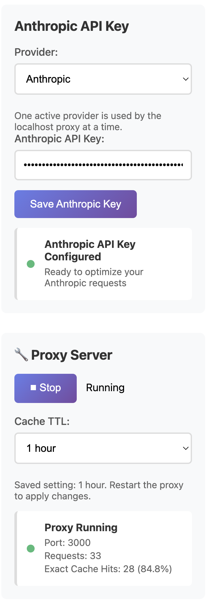

Repeat-heavy Claude workflows
Scheduled summaries, recurring checks, repeated developer prompts, and agent loops are all cleaner candidates for local caching than one-off exploration.
If your Claude workflows repeat the same request pattern over time, a local proxy can reduce repeated Anthropic API waste without forcing you to redesign the workflow around a new platform.
You can reduce repeated Anthropic API waste by routing Claude requests through a localhost caching proxy instead of sending every repeat call upstream at full cost. AI Optimizer uses the same local-first workflow pattern as its OpenAI lane, with Anthropic support focused on chat completions.
The repeated-cost problem is usually not one giant request. It is the same prompt shape appearing again in scripts, automations, recurring jobs, agent loops, and local tools that keep revisiting the same work.
Scheduled summaries, recurring checks, repeated developer prompts, and agent loops are all cleaner candidates for local caching than one-off exploration.
The value proposition stays simple: route traffic through localhost, keep the surrounding workflow mostly intact, and confirm the cache-hit behavior from one local control layer.
Caching helps most when your Anthropic requests repeat clearly enough to hit the same cache path again inside the configured TTL window.
The strongest value shows up when repeated Anthropic requests can stay identical or very close to identical long enough to benefit from the cache TTL. This is especially useful for repeat-heavy local workflows.
Anthropic support is focused on chat completions through the same local proxy workflow used elsewhere in the app. That is enough to prove the local caching lane and support many real Claude workflows cleanly.

Install AI Optimizer, choose Anthropic, route traffic through localhost, and verify repeat-request cache behavior before rolling it into the repeated parts of your stack.